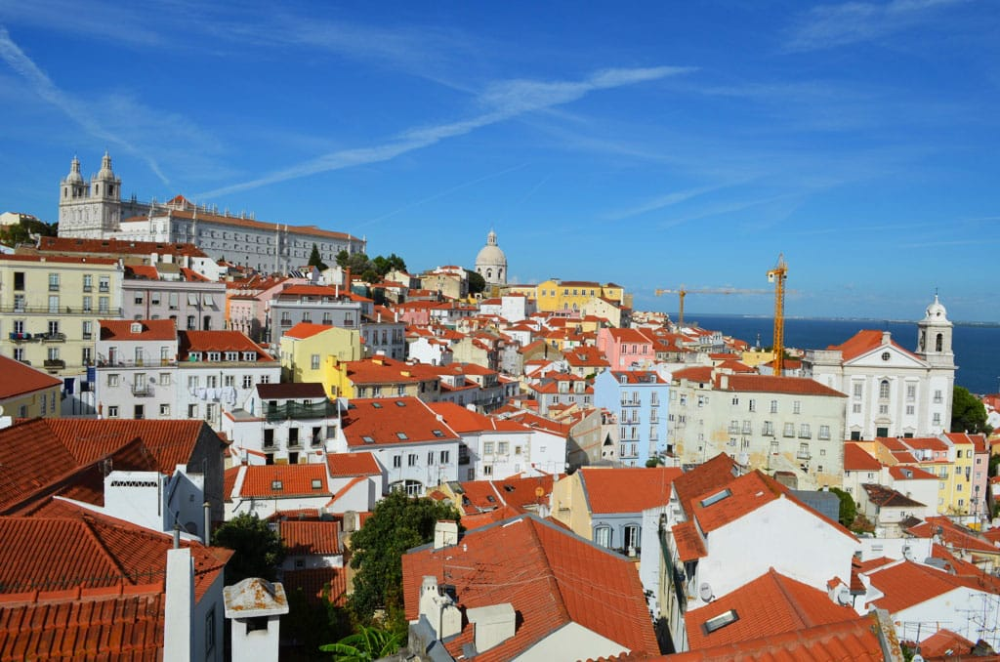
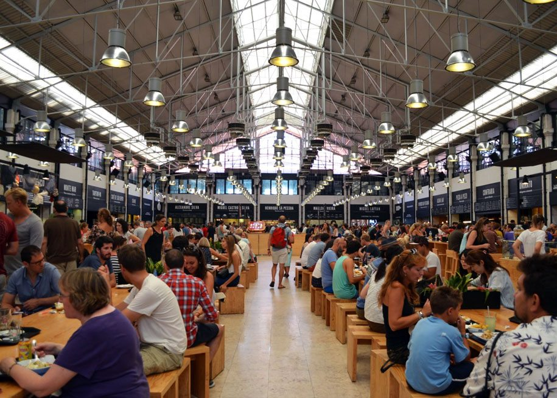
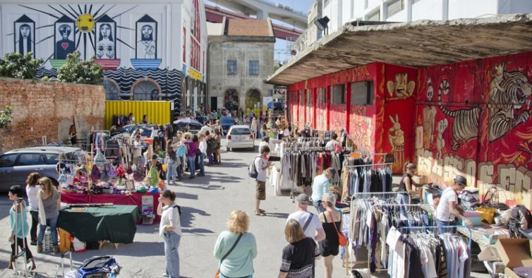
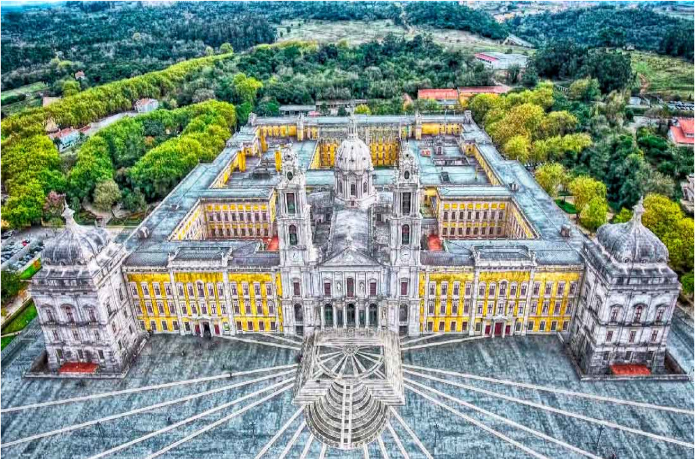

6 PRINCIPAIS PONTOS TURÍSTICOS DE PORTUGAL PARA COLOCAR NO ROTEIRO
Você está planejando uma viagem para a terrinha? Então anote os Pontos Turisticos de Portugal que você precisa conhecer para torná-la inesquecível.
Apesar de ser um país pequeno, Portugal é incrivelmente diverso de Norte a Sul. Dependendo do tempo que você planejou para sua viagem, vale muito a pena fazer um roteiro pelas paradas obrigatórias em todos os pontos turísticos de Portugal que selecionamos na lista abaixo – aproveite para conferir também nosso post com Roteiro Portugal.
Para quem gosta de cidade, restaurantes, exposições badaladas e uma pegada mais jovem, as cidades de Lisboa e Porto são imperdíveis. Se por outro lado você adora praia e natureza, não deixe de visitar a região do Algarve e as ilhas dos Açores e da Madeira. Confira abaixo os 20 pontos turísticos de Portugal e faça uma boa viagem!
Dica para curtir Lisboa
Lisboa Card
Antes de iniciar a nossa lista de pontos turísticos imperdíveis em Portugal, precisamos dar uma dica de ouro para os viajantes que vão passar uns dias em Lisboa. O Lisboa Card garante ingressos a mais de 30 atrações na capital, descontos em lojas selecionadas, além de uso ilimitado ao transporte público.
O Lisboa Card tem duração de no mínimo 24 horas e, no máximo, 72 horas, podendo ser retirado em diversos pontos na cidade. O cartão é válido para uso único em cada uma das atrações, sendo algumas delas: Torre de Belém, Mosteiro dos Jerónimos, Tesouro Real, Museu Nacional do Azulejo, e outros
Garanta o Lisboa Card para aproveitar sua viagem ao máximo.
Pontos turísticos de Portugal em Lisboa e centro do país
1.Torre de Belém, Lisboa
Torre de Belém – Pontos turisticos de Portugal | Dicas de Viagem – Foto: Virginia Falanghe Uma das paradas obrigatórias para quem visita Lisboa, é a Torre de Belém. Esse ícone do estilo Manuelino é um emblema do tempo dos Descobrimentos e uma das Sete Maravilhas de Portugal.
Reserve uma manhã para passear a pé por Belém, já que tem vários pontos turísticos para conhecer por lá. Comece com um café expresso e o famoso pastel de Belém, mas não fique assustado com a fila!
Temos uma dica ótima de #insider: ao invés de pedir take away (“para viagem”), entre nos Pastéis de Belém e vá explorando os corredores forrados de azulejos. Tem várias salas, com mesas para os clientes sentarem e comerem um ou dois pasteizinhos tranquilamente.
Dali vá até o Mosteiro dos Jerônimos e depois suba o Padrão dos Descobrimentos para uma vista panorâmica da cidade. Visite o CCB (Centro Cultural de Belém), onde sempre tem exposições interessantes e uma das melhores gelatarias da cidade, a Davvero.
Depois caminhe pelos jardins de Belém, passando pelo Palácio de Belém onde mora o Presidente de Portugal. Termine seu passeio visitando o MAAT (Museu de Arte, Arquitetura e Tecnologia), um edifício de arquitetura moderna junto do Rio Tejo que vale a pena conhecer.
Pontos Turísticos em Belém:
- Visite A Torre de Bellém:
- Visite o Mosteiro dos Jerônimos
- Visite o Padrão dos Descobrimentos
- Visite o CCB
- Visite o MAAT
Onde comer em Bellém:
- Pastéis de Belém
- Restaurante Feitoria
- Restaurante Este Oeste, no CCB
- Darwin’s Café, na Fundação Champalimaud:
- Esplanada À Margem
2.Castelo de Óbidos, leiria
Uma das maravilhas de Portugal, e da Europa na verdade, é a possibilidade de visitar lugares que parecem ter saído de livros de princesas. Se você procura cenários como esse, então vá até o Castelo de Óbidos em Leiria, a 80 quilômetros de Lisboa.
Caminhe em cima das muralhas do castelo, descobrindo lá em baixo as casinhas e ruelas protegidas por elas. Se perca pela vila medieval do tempo de D. Afonso Henriques – o primeiro Rei de Portugal – com detalhes de estilo manuelino bem preservados.
Termine seu passeio provando uma iguaria local, a famosa Ginjinha de Óbidos – o licor famoso da região que é servida num copinho de chocolate.
Onde ficar em Óbidos:
- Pousada de Castelo de Óbidos:
A melhor Ginjinha de Óbidos
- Bar ibn Errik Rex
Almafa, lisboa
Visita ao centro histórico de Lisboa. – Portugal pontos turisticos | Dicas de Viagem – Foto: Virginia Falanghe
O bairro de Alfama é o mais antigo de Lisboa e por isso berço de muitas tradições como o Fado, as festas de Santo António e o jeitinho do povo Português. Para visitar as ruazinhas estreitas que sobem e descem, o legal é pegar um tuk-tuk ou fazer a pé mesmo.
Suba até o Castelo de São Jorge (valor do ingresso normal – 8,50 €) para uma vista panorâmica, localizado no cume de uma das sete colinas da cidade. Não deixe de entrar na Sé de Lisboa e na Igreja de São Vicente de Fora, dois dos mais visitados monumentos religiosos em Portugal.
Aprecie a vista dos telhados e do Rio Tejo do alto do miradouro de Santa Luzia e desça as escadinhas até o Campo das Cebolas. Lá é onde fica a inusitada Casa dos Bicos, que hoje é a sede da Fundação José Saramago – o conceituado escritor Português.
Durante esse passeio, você vai poder conhecer de perto as inspirações de algumas músicas portuguesas. É que ali é possível visitar o Museu do Fado, que conta como essa paixão foi passando de geração em geração. Uma experiência incrível é reservar uma mesa no restaurante Clube de Fado, do lado da Sé, e jantar com fado acompanhado da guitarra portuguesa.
Pontos Turistico de Almafa:
- Visite o Castelo de São jorge
- Visite a Sé de Liboa
- Visite a Igreja de São Vicente de Fora: Largo de São Vicente
Baixa-Chiado, Lisboa
Mercado da Ribeira da Time Out. Foto: Virginia Falanghe. Portugal Pontos Turisticos
Em Portugal, como em quase todas as cidades Europeias, tem bastante comércio de rua funcionando o dia todo. Vale passear pelas ruas da Baixa, do Chiado e do Príncipe Real em Lisboa, que estão repletas de lojas de todo o tipo. Desde Zara, Tiger e Sephora, a lojas locais com peças únicas, como é o caso da Burel (lãs artesanais) e da Vista Alegre.
No Largo do Chiado, visite o famoso Café “A Brasileira”, onde vários poetas e pensadores se encontravam no início do século XX. Depois desça pela Rua do Alecrim, uma das mais bonitas da cidade, até o Cais do Sodré.
Almoce no Mercado da Ribeira, que pertence à Revista Time Out, onde você pode provar pratos ótimos de vários Chefs portugueses. Dali é possível caminhar pelas margens do Rio Tejo, fazendo o passeio da Ribeira das Naus até à belíssima Praça do Comércio, também conhecida como Terreiro do Paço.
Onde comer em Baixa-Chiado:
- Mercado da Ribeira
- Restaurante Belcanto, um dos melhores restaurantes da cidade
- Restaurante Bairro do Avillez
- Restaurante Atalho Real
a você não perder nenhuma atração, veja nosso mapa com todos os lugares de Baixa-Chiado
5.LX Factory, Lisboa
LX Factory em Lisboa – Pontos Turisticos em Portugal | Dicas de Viagem: Foto: NIT
Lisboa é uma cidade onde as antigas tradições e o espírito inquieto dos Portugueses convivem lado a lado. Um dos melhores lugares para ver isso de perto é o LX Factory, um antigo complexo de fábricas totalmente transformado em hub criativo.
Por ali tem espaços de cowork, concept stores, livrarias, barbearias, bares e cafezinhos de todos os tipos. O que não falta são opções para experiências gastronômicas locais e internacionais.
Também vale a pena conferir a agenda, porque sempre tem shows e workshops acontecendo por ali, além da feirinha de domingo.
Se você estiver a fim de tomar um drink no fim da tarde, suba até um dos barzinhos que ficam no topo das antigas fábricas. No final de semana ficam lotados de locais, pessoal que está fazendo intercâmbio e alguns turistas para brindar uma das melhores vistas do Rio Tejo.
6 Palacio Nacional de Mafra, Liboa
Palácio da Mafra – Pontos turisticos de Portugal | Dicas de Viagem – Foto: Miguel Carraca
Um dos principais pontos turísticos de Portugal é o Palácio Nacional de Mafra, que fica a 25 Km de Lisboa. O maior monumento barroco do país, levou quase quinze anos a ser construído e engloba uma igreja, um convento e um palácio.
Vale a pena visitar as luxuosas salas que recebiam a corte do Rei D. João V e a Basílica forrada a mármore do chão até o teto. Mas a verdadeira joia do Palácio é a biblioteca. De tirar o fôlego, ela parece literalmente saída do filme da Disney “A Bela e a Fera”.
Tome seu tempo olhando as estantes trabalhadas, que guardam mais de 36.000 livros. Lá é possível olhar pessoalmente uma das primeiras edições de ”Os Lusíadas” de Luís de Camões.
Pra você entender a grandiosidade do Palácio Nacional de Mafra veja abaixo o vídeo que separamos pra você.